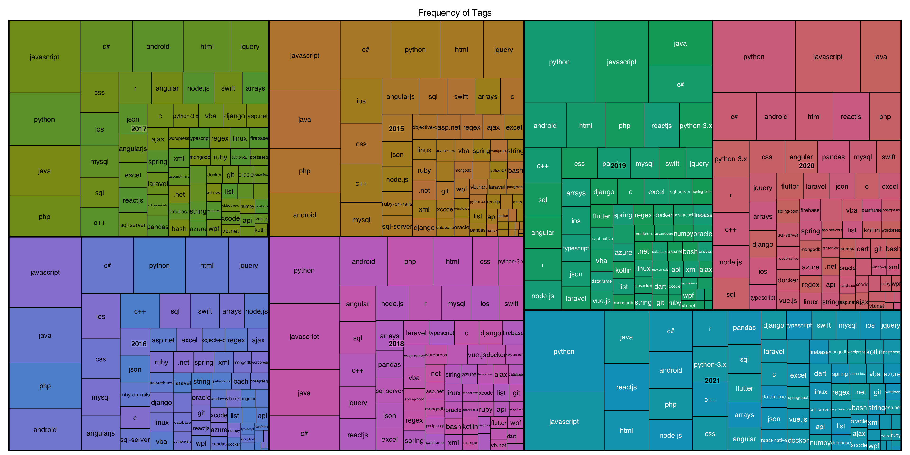

Chapter 5 Results
5.1 Top Tags over time
df1_count <- df1 %>%
group_by(year, Tags) %>%
summarise(TotalViews = sum(ViewCount), TagCount = length(Tags), TotalComments = sum(CommentCount), AcceptedAnswers = sum(as.integer(as.character(AcceptAnswer))), TotalAnswers = sum(AnswerCount)) %>%
mutate(TagRank = as.factor(order(TagCount,year,Tags, decreasing = T))) initial_rank <- df1_count %>% filter(year==2015) %>% dplyr::select(Tags, TagRank)
initial_rank <- initial_rank %>% rename(InitialRank = TagRank)
initial_rank <- initial_rank[,2:3]
df1_count <- left_join(df1_count, initial_rank) %>%
mutate(InitialRank = cut(as.numeric(InitialRank), breaks = seq(0,75,5), right = F))p <- ggpairs(df1_count %>% dplyr::select(year,TotalViews,TagCount,TotalComments, AcceptedAnswers,TotalAnswers), aes(color=year)) +
theme_bw() +
theme_update(text = element_text(size=15))
#scale colors
for(i in 1:p$nrow) {
for(j in 1:p$ncol){
p[i,j] <- p[i,j] +
scale_fill_manual(values=rev(c("#1B9E77", "#D95F02", "#7570B3", "#E7298A", "#66A61E", "#E6AB02", "#A6761D"))) +
scale_color_manual(values=rev(c("#1B9E77", "#D95F02", "#7570B3", "#E7298A", "#66A61E", "#E6AB02", "#A6761D")))
}
}
p
#TagCount, TotalComments, AcceptedAnswers, and TotalAnswers are all heavily correlated. Only need to use one or two to monitor the popularity of tags over years grid.arrange(
df1_count %>%
dplyr::select(year, TotalComments, AcceptedAnswers, TotalAnswers) %>%
group_by(year) %>%
summarise_all(sum) %>%
gather("Type","Value",-year) %>%
ggplot(aes(year, Value, fill = Type)) +
geom_bar(position = "dodge", stat = "identity") +
scale_fill_manual("legend", values = c("TotalComments" = "#0072B2", "AcceptedAnswers" = "#D55E00", "TotalAnswers" = "#CC79A7")) +
theme_bw() +
ggtitle("Sum of Variables by Year"),
df1_count %>%
dplyr::select(year, TotalViews) %>%
group_by(year) %>%
summarise_all(sum) %>%
gather("Type","Value",-year) %>%
ggplot(aes(year, Value, fill = Type)) +
geom_bar(position = "dodge", stat = "identity") +
scale_fill_manual("legend", values = c("TotalViews" = "#E69F00")) +
theme_bw(),ncol=1)#It appears views accumulate over time, total popularity/usage of tag may have to be computed overall. Current usage of Tag not reflected in views. Answers accumulate over time to a lesser degree. AcceptedAnswers seem to be pretty stable but haven't had time to fully accumulate for past 2 years.df1_count %>%
group_by(Tags) %>%
ggplot(aes(TotalViews, TotalAnswers)) +
geom_hex() +
ggtitle("Total Views vs Total Answers") +
xlab("Total Views") +
ylab("Total Answers")
For tags with less than 5,000 answers, as the total number of views per tag increases, the total number of answers provided tend to increase as well, with an exception of a tag having about 5 million views but less than 1250 answers, which may be an outlier tag. This suggests that the more view a tag has, the more answers it is likely to have. Also, many of the tags have relatively low views and few answers.
For tags that have more than 5,000 answers, the amount of views vary from lowest to greatest, suggesting little to no correlation between the number of views a tag in this group has and number of answers it has received.
getPalette = colorRampPalette(brewer.pal(9, "BuGn"))
df1_count$Ranking<-cut(as.numeric(df1_count$TagRank), seq(0,75,5), right=FALSE)
colourCount = length(unique(df1_count$Ranking))
ggplot(df1_count,
aes(x = year, stratum = TagRank, alluvium = Tags,
fill = InitialRank, label = Tags)) +
scale_fill_manual(values = rev(getPalette(colourCount))) +
scale_x_discrete(expand = c(0, 0)) +
scale_y_discrete(expand = c(0, 0)) +
geom_flow(stat = "alluvium", lode.guidance = "frontback",
color = "darkgray") +
geom_stratum(width = 3/7) +
geom_text(stat = "alluvium", aes(label = after_stat(alluvium)), size=8) +
theme(legend.position = "bottom", axis.text = element_text(size = 15, face = "bold")) +
ggtitle("Frequency of Tags by Year") 
#Tags being used in new posts change drastically in popularity over time. Some notable trends include; amazon-web-services staying in the same rank over several years, android maintained rank for 3 years from 2018 to 2020

#nearly identical but with notable differences; python and javascript always have a large proportion year2015 <- df1_count %>%
group_by(Tags) %>%
filter(year == 2020) %>%
mutate(diff2015 = TagCount) %>%
dplyr::select(Tags, diff2015, TagCount)
year2020 <- df1_count %>%
group_by(Tags) %>%
filter(year == 2015) %>%
mutate(diff2020 = TagCount) %>%
dplyr::select(Tags, diff2020, TagCount)
increase <- full_join(year2015, year2020, "Tags") %>%
group_by(Tags) %>%
mutate(diff = diff2020 - diff2015) %>%
mutate(increased = ifelse(diff > 0, 1, 0)) %>%
dplyr::select(Tags, increased)
df1_count_sub <- df1_count %>%
filter(year %in% c(2015,2020))
df1_count_sub <- left_join(df1_count_sub, increase, "Tags")
highlight <- filter(df1_count_sub, increased == 0)
df1_count_sub %>%
ggplot(aes(TagCount, fct_reorder(Tags, TagCount))) +
geom_point(aes(color = year), alpha = 0.3) +
geom_line(aes(group = Tags), alpha = 0.3) +
geom_line(data = highlight, aes(group = Tags)) +
geom_point(data = highlight, aes(color = year)) +
ggtitle('Tag Counts in 2015 vs 2020') +
xlab('Tag Count') +
ylab('') +
theme_bw()
Highlighted tags are the ones with an increase from 2015 to 2020.
From year 2015 to 2020, we can see python has gained a substantially large amount of interest by users based on the number of tags, and it is the only tag that has an increase in the top 12 tags with the most tag counts. Over the past five years, it seems like python has become the most popular programming language users have interacted with on StackOverflow in comparing to other languages such as javascript, java, c#, c++, which all have a decrease in the tag counts.
languages <- c("c","c#","c++","dart","java","javascript","sql","swift")
df1_count %>%
filter(Tags %in% languages) %>%
ggplot(aes(TotalComments, fct_reorder(Tags, TotalComments))) +
geom_density_ridges() +
ggtitle("Total Comments by Tag") +
ylab("Programming Languages") +
xlab("Total Comments") +
theme_classic()
Based on the above Ridgeline plot, javascript, java, and c# seem to have the greatest variation in total comments from years 2015 to 2021.